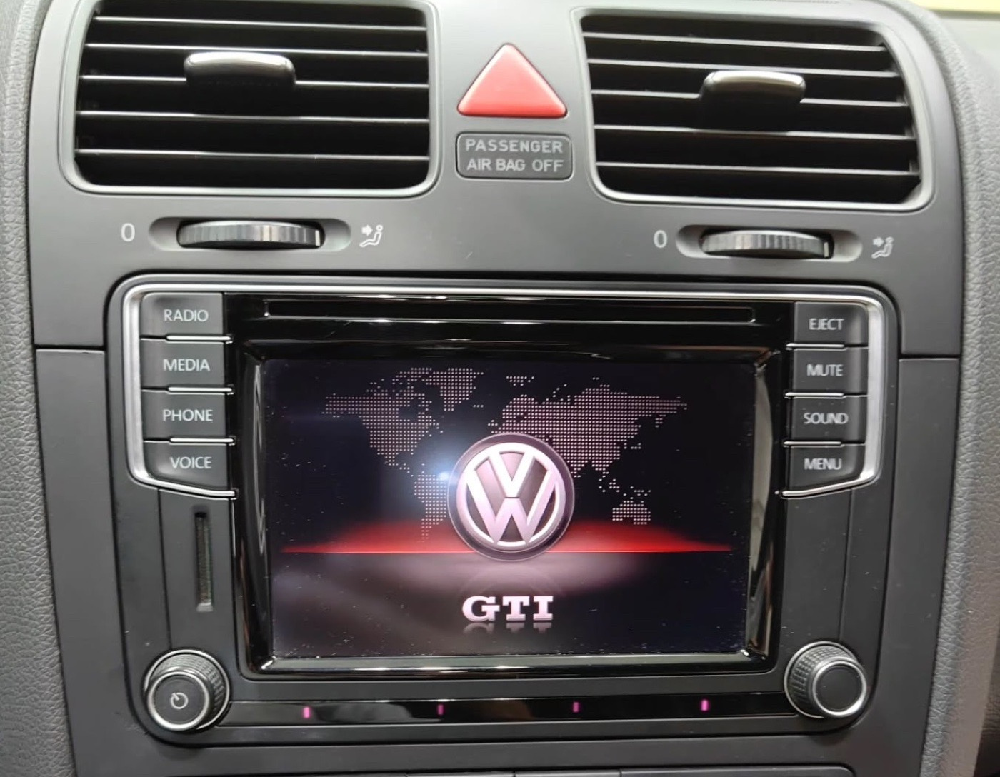
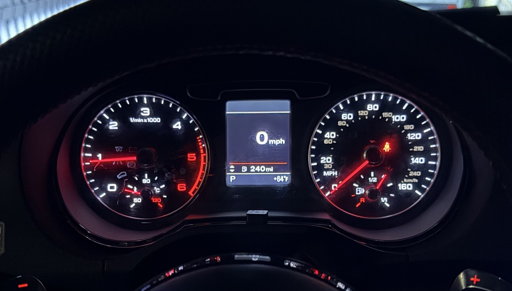
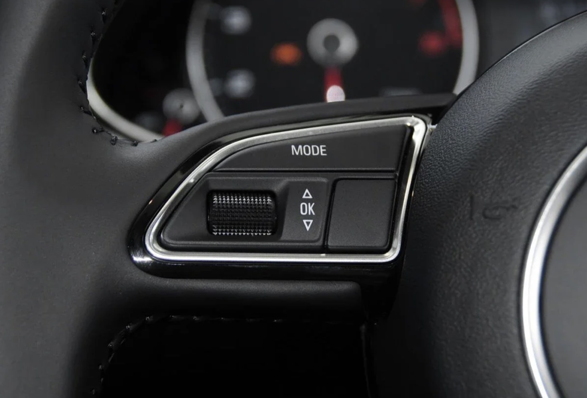

BRIDGING OLD
SYSTEMS WITH
NEW IDEAS.
Apple-certified technician, registered Apple developer, and VW/Audi specialist building embedded tools for connected vehicle systems.
01 MAC REPAIR
SINCE 2012 02 DEVELOPER
SINCE 2019 VW / AUDI
EXPERT
SINCE 2012 02 DEVELOPER
SINCE 2019 VW / AUDI
EXPERT
CAN // 500K
SCROLL TO DISCOVER
WHAT I DO
MAKE DIFFERENT
GENERATIONS
SPEAK THE SAME
LANGUAGE.
Modern components do not always understand the vehicles they land in. I study the traffic, identify the missing messages, and build focused hardware and firmware to translate between them.
ENGINEERING EMBEDDED
DEVELOPMENT DIAGNOSTICS PRACTICAL
REPAIR REVERSE
ENGINEERING SOFTWARE
TOOLS
PROJECTS
TOOLS FOR MACHINES
THAT WERE NEVER
MEANT TO TALK.
01

MIB2 // CAN BRIDGE MIB2 CAN BRIDGE A Teensy CAN bridge restoring brightness control, MFD display, and MFSW control in pre-2010 Volkswagens. C++ / TEENSY 4.0 / DUAL CAN 02
8P // 8U CLUSTER 8P TO 8U CLUSTER STM32 firmware allowing Audi 8U Q3 instrument cluster functionality and control in an Audi A3 8P. C / STM32 / SINGLE CAN 03
1K0 // SWCM 1K0 AUDI SWCM FIX STM32 firmware translating VW 1K0 SWCM MFSW CAN commands into Audi-compatible commands. C / STM32 / SINGLE CANABOUT
HARDWARE,
SOFTWARE, AND THE
SPACE BETWEEN.
I work where diagnostics, embedded code, and practical repair meet. My projects translate vehicle CAN messages, restore missing functions, and make newer components useful in older platforms.